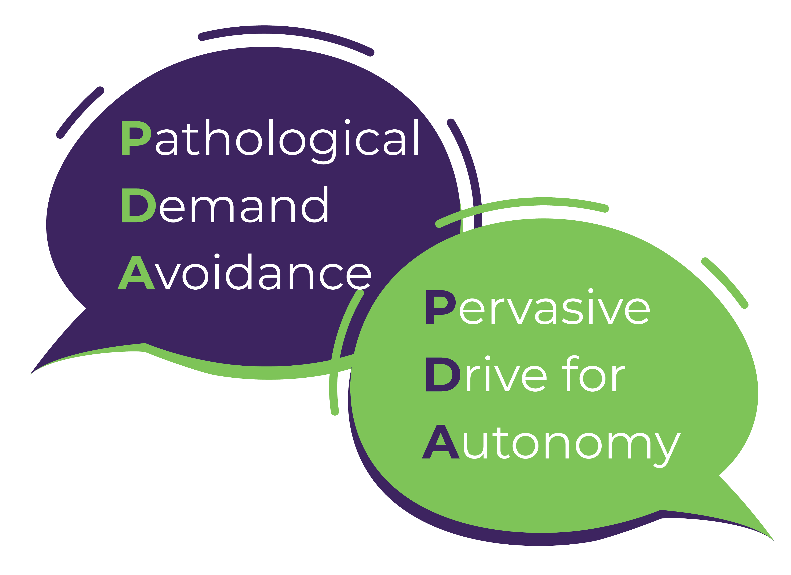

Understanding how our children communicate, and process information is crucial in establishing a nurturing environment for them. In this blog, we break down Pathological Demand Avoidance in neurodivergent youth and explore strategies for better understanding and support.
Listen to this post
What is PDA?
Pathological Demand Avoidance (PDA) is a pattern of behavior in which a child goes to the extreme to avoid anything that feels like a demand even if the child may have the ability to complete a certain task. This behavior is termed “pathological” because it interferes with the child’s functioning at school or at home.
PDA Core Features
Some of the core features of PDA are:
- An extreme, anxiety-based need for autonomy and control
- Children (and adults) have a highly sensitive stress response system
- Hypersensitive neuroception – automatic/unconscious system for detecting threat/safety
- Perception of a loss of autonomy can have an extreme response
In some cases, PDA also manifests through the following characteristics
- Social differences may be more subtle
- Role play and pretend can be extreme
- Hyperfocus can be on other people
- Unable to comply with the daily demands of life
- Sometimes can’t make themselves do things they want to do
- May not see hierarchy or age differences
- School refusal – presentation at home v at school
PDA vs Other Types of Demand Avoidance
Demand avoidance is quite common and may not necessarily indicate PDA. Learn more about the differences between these two responses to demands, in this article.
There are many reasons why your child may avoid completing a task you ask them to do. This avoidance is often due to difficulty with:
- Sensory experience
- Initiating tasks
- Switching from one task to the next
- Anxiety about not doing well
- Shame
- Tolerating uncertainty
- Lack of control/choice
- Emotional regulation
- Flexibility
- Sustaining attention
- Understanding expectations
Demands are everywhere
- Direct demands e.g., from parents “Pick up your shoes”, “Go to school” etc.
- Indirect demands e.g., internal demands like feeling hungry, sleepy, having to go to the bathroom etc
- Internalized and Externalized Expressions of PDA
- Externalized: more obvious behavior challenges like pushing back
- Internalized: may mask some of their challenges. May agree to a task while thinking of ways to avoid completing that demand
Common Causes of Dysregulation in Neurodivergent Youth
Sensory triggers. can lead to lowered frustration tolerance. For example, if your child had to spend the whole day in school, experienced a loud assembly and had too many tasks to complete by the end of the day, they may not have the capacity to tolerate the frustrating task of homework after school.
Gap between expectation and reality/prediction error. For example, say your child is used to getting home and receiving a particular snack from you. If that day you are all out of that snack, they may have a difficult time understanding why they cannot get that snack and self-regulating to accommodate that unexpected change in routine.
Navigating a world designed for neurotypical people. For example, in a world where there is an over-reliance on speech, your child may experience a dysregulation of senses if they are non-speaking or minimally-speaking and their conversation partner is not doing their part to accommodate that need.
Parental/Adult expectations do not match the child’s abilities. There was a study showing that half of parents believed their children have more ability to manage their impulses and control their emotions than they actually do.
Why understanding PDA is critical
- Lightbulb moment: Parents come to PDA when all their previous interventions have not worked but PDA offers deeper understanding to what they are experiencing
- Many parents getting the wrong advice and getting blamed when it doesn’t work
- Parents know in their gut something isn’t right
- Missed autism presentations/incorrect diagnoses due to stereotypes about what autism looks like
- Parents seeking validation and confirmation of what they already know to be true
- PDA strategies may be better for everyone
PDA Strategies (PANDA)
Strategies derived from the PDA society to accommodate your child:
- Pick Battles
- Look for opportunities to allow for choice and control
- Low demand approach (attuned parenting – meet your child where they are at. This lays a foundation of regulation and creates room for growth)
- Looking for opportunities to give your child a “win”
- Anxiety management
- Low arousal approach
- Anticipate problems
- Look at meltdowns as panic attacks
- Negotiation and Collaboration
- Proactive problem-solving; giving kids a say in solving their own problems
- Be flexible
- Disguise and Manage Demands
- Be thoughtful with word choice
- Avoiding direct demands like “you need to”, “you’ve got to” – using “I wonder” statements (refer to the AAC communication blog that talks about this too).
- Declarative language
- Adaptation
- Use humor, distraction, novelty and again, Be Flexible
- Connection over control
Shifting Perspectives in the Neurodiversity Movement
Won’t vs Can’t. Viewing your child as someone who can’t switch from one task to another or regulate their emotions in a particular way instead of someone who won’t do what you want them to do
What vs Why. Switch from asking what is the behavior we’re seeing to why is this particular behavior happening. For instance, if you get a report from school about your child throwing a pencil or pinching a playmate, challenge yourself to ask why your child reacted in this way. Understanding why this was your child’s behavior creates a space for proactively learning how to prevent this/meet your child’s need going forward.
Control vs Comfort.
External behavior vs internal experience. Your child may be expressing an internal experience through external behavior such as a meltdown. When this happens, it is important to shift your focus from the external behavior to try to understand what internal experience may be influencing this situation.
Inflexible vs Flexible. Adults should be more flexible when handling big behavior challenges that arise.
Independence vs Interdependence. There can be an over-focus on independence. It is important, however, to keep in mind that we all depend on each other in some way and that we should be mindful of the expectation vs ability mismatch that may exist (discussed above)
Changing the child vs Changing the system around the child. If you see a problem, instead of focusing on what to change in your child, look at their environment and creatively address the stressors/make accommodations that would decrease the load on your child.
So what is the “right” approach
There is no one “right” approach but here are a few things we can keep in mind:
Receiving a diagnosis of neurodivergence for your child can cause quite a few fears – especially about the future - to arise. As a parent it is important to reflect on your own parenting history, assess how your child is similar or different from you, and take time to process your fears.
Parent and child understand hidden stressors and recognize when stress is increasing.
As a parent, reflect on how you can make the hidden disability/stressors more visible so you can mitigate them before they become overwhelming.
Instead of considering yourself as the authority over your child, take on a “Relationship First” mentality where you exercise your flexibility and challenge your views on parental control of kids. This is not the same as saying that you should let your child do whatever they want. It is, however, taking a different approach to parenting that gives your child more independence while maintaining their safety.
Striving toward the “just right” challenge by slowly increasing demands after period of increased regulation.
Come to a place of radical acceptance for the things we can’t change. This is a messy and ever-changing process of parenting. You can both help your child and accept the way things are.
Understanding Your Child’s Window of Tolerance
Metaphor for a state of balance in the nervous system that allows people to function at their best.
Look for how to get your child to the optimal zone where they can cope with the demands of life. This can be impacted by everything from sleep/appetite to stress to sensory triggers
Finding the Right Balance
Stretching but not over-stretching. We don’t want to tear the hamstrings. Instead, we want to gently stretch our neurodivergent children while considering internal stressors that may exist as well as meeting them where they are.
We may not be able to reduce all demands. This varies from family to family for instance advocating for your child to have special accommodations at school.
What you can do is go into stress detective mode to uncover what stressors you can remove from your child’s life.
You can also adopt collaborative problem-solving (Ross Greene) where you work with your child to come up with mutually-agreeable solutions to problems ahead of time that you’ve identified as a priority. Low priority issues can be tabled for a time.
Knowing this isn’t permanent. The particularly hard time are often not long-lasting; they are windows of time that you come in and out of.